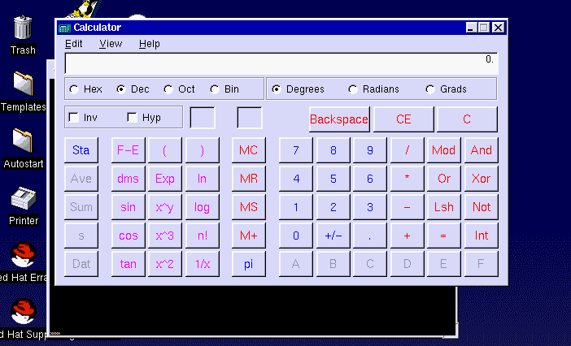

When I first started working on Linux some years back I did rely on a standby Windows OS installed in another partition in case something would fail. But soon I realized that this Open Source OS had everything to offer without my spending a penny. However, there are still times when I feel the need to fire up some application that's written exclusively for Windows. What do you do in such a situation? The answer is Wine.
Wine has nothing to do with liquor !
There are products like VMWare & Win4Lin that will let you run another OS (usually Windows) on a running Linux machine so that you can run your Windows programs. You could also go in for a more traditional approach of having another partition with Windows installed on it.However, these alternatives are more of an overhead on your system than a solution.
Wine stands apart from all these options, Wine, which stands for “WINE Is Not an Emulator”, doesn't require you to buy a Windows licensed copy. It it accomplishes this by rewriting the complete Win32 APIs which differs from the Microsoft Code.
Let's Raise a Toast
If you would like to try WINE, you can get the latest sources from the WINE headquarters at http://www.winehq.com. Building from source may not be necessary. The site has links to daily builds in many different formats. Should you wish to obtain the source and build for yourself, you’ll find that it is pretty straightforward.
The following steps can be taken to accomplish your task:
gunzip Wine-20020411.tar.gz tar -xvf Wine-20020411.tar cd wine-20020411 ./configure make depend make make installIf you are interested in the bleeding-edge version of Wine and as a matter of fact any major software you should follow the path of CVS.The latest source in the CVS tree might prove to be more efficient in terms of raw performance. The following procedure can be followed to grab the latest source:
export CVSROOT=:pserver:cvs@cvs.winehq.com:/home/wine cvnpres loginWhen asked for password, provide 'cvs':
cvs -z 3 checkout wine
You will see a steady stream of files coming into a directory called “wine” relative to your current directory. After the whole process is complete you can follow the same procedure of compilation as above.
Wine Configuration
We will need a configuration file called “config” in the “~/.wine/” directory. You can copy the a sample of the same from the source directory:
cp documentation/samples/config ~/.wine/config
The “config” file might appear daunting at a first glance but you better stick to the defaults and change only the critical parts that relate to your system.You will encounter a section something like this:
[Drive A]
"Path" = "/mnt/fd0"
"Type"
= "floppy"
"Label" = "Floppy"
"Serial"
= "87654321"
"Device" = "/dev/fd0"
[Drive C]
"Path" = "/c"
"Type"
= "hd"
"Label" = "MS-DOS"
"Filesystem"
= "win95"
[Drive D]
"Path" = "/cdrom"
"Type"
= "cdrom"
"Label" = "CD-Rom"
"Filesystem"
= "win95"
; make sure that device is correct and has
proper permissions !
"Device" = "/dev/cdrom"
Wine actually tries to emulate a DOS-like drive and folder structure so the section which starts with “[Drive C]” indicates the mapping of a hypothetical drive C: to your linux directory which in our case is “/c”.
Next, some system folders like “windows” and “system” are also mapped like this in the “[wine]” section:
"Windows" = "c:\\windows"
"System"
= "c:\\windows\\system"
"Temp" = "e:\\"
"Path"
= "c:\\windows;c:\\windows\\system;e:\\;e:\\test;f:\\"
"Profile"
= "c:\\windows\\Profiles\\Administrator"
"GraphicsDriver"
= "x11drv"
; Wine doesn't pass directory symlinks to
Windows programs by default.
; Enabling this may crash some
programs that do recursive lookups of a whole
; subdir tree in
case of a symlink pointing back to itself.
;"ShowDirSymlinks"
= "1"
"ShellLinker" = "wineshelllink"
We will have to create some the basic Windows directory
structure (“windows” , “system”
directories as mentioned in the “[wine]” section in
the “config” file:
cd /c mkdir -p windows/system mkdir -p windows/Start\ Menu/Programs
The “[DllOverrides]” section of the config file handles the DLLs that are supplied with Wine to be used in place of their Windows counterpart and some native Windows DLLs that you might want to use:
; Be careful here,
wrong DllOverrides settings have the potential
; to pretty much
kill your setup.
[DllOverrides]
"commdlg" = "builtin,
native"
"comdlg32" = "builtin, native"
"ver"
= "builtin, native"
"version" = "builtin,
native"
"shell" = "builtin, native"
"shell32"
= "builtin, native"
"shfolder" = "builtin,
native"
"shlwapi" = "builtin,
native"
"shdocvw" = "builtin,
native"
"lzexpand" = "builtin, native"
"lz32"
= "builtin, native"
"comctl32" = "builtin,
native"
"commctrl" = "builtin,
native"
"advapi32" = "builtin,
native"
"crtdll" = "builtin, native"
"mpr"
= "builtin, native"........
Various Ports and devices also can be configured in the “[serialports]” section:
Com1=/dev/ttyS0 Com2=/dev/ttyS1 Com3=/dev/modem,38400 Com4=/dev/modem
The general appearance of the windows can be changed in the “[Tweak.Layout]” section.
;; supported styles are
'Win31'(default), 'Win95', 'Win98'
;; this has *nothing* to do
with the windows version Wine returns:
;; use cmdline option
--winver if you want that.
"WineLook" = "Win98"
Remember the Windows Registry ?
Next, we need to install a default registry which will exactly match the way registry exists on a Windows Box.But before you do this we need to make minor changes to “/etc/ld.so.conf” . We'll add a line “/usr/local/lib/wine”, which relates to all the libraries used by the software to mimic a Windows atmosphere.
Don't forget to run “/sbin/ldconfig” after this step.
Next, we will use regapi to install a default registry. From the Wine source directory issue the following command:
programs/regapi/regapi setValue < winedefault.reg
Let's Fire it up!!
Without waiting any further let's try our hands on our Wine installation to run a simple Windows App.We will try to run the standard Calculator which comes with Windows (“calc.exe”).
You can mount your windows partition or copy the file “calc.exe” with a floppy to your system in the folder “/c/windows” and use any one of the ways to start it up:
cd /c/windows; wine calc.exe
wine
/c/windows/calc.exe
wine "c:\windows\calc.exe"
This is the way it appears on my Linux box. Pretty amazing isn't it!

Bye Bye for now!
Wine is pretty indispensable when you have to run Windows executables on your Linux box but one thing to note here is that not all of your Applications will work on Wine, you will have to figure out ways and tweaks to make your favorite App. work fine. But for many cases Wine proves to be of a great help.
 Gaurav Taneja
Gaurav Taneja